Best Fit
Who should use mission and when it belongs in the network journey.
Network / 01
Network opens as a clear telecommunications decision hub: what Signal offers, who it helps, why it matters, and which route to take first.
The first screen combines positioning, proof, primary action, and fast internal navigation, so people can act immediately or compare the rest of the network route with context.
Black full-bleed coverage hero
Select the closest route and Signal keeps the next step, proof, and follow-up expectation aligned with availability and reliability.
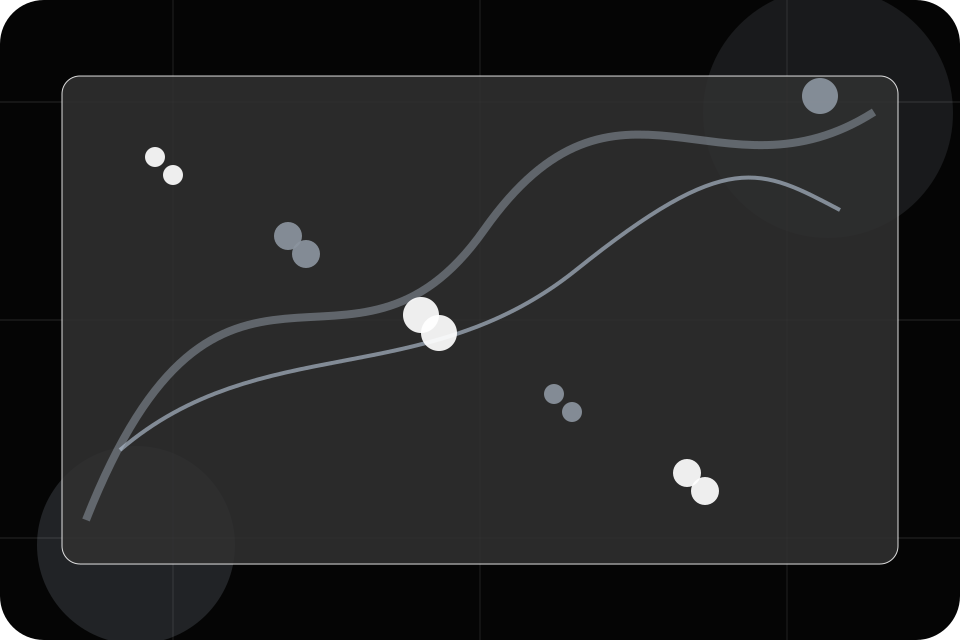
Network / 02
Mission explains the practical scope, best-fit situations, and expected outcome so telecommunications visitors can compare options without decoding jargon.
The section keeps the offer concrete: what is included, who it is best for, what decision it supports, and which linked route gives the deeper detail.
Explore Network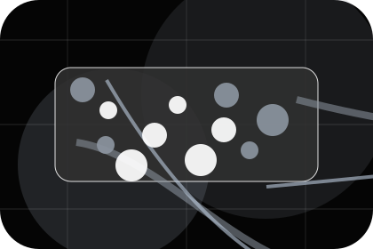
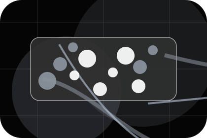
Who should use mission and when it belongs in the network journey.
Network / 03
Company explains the practical scope, best-fit situations, and expected outcome so telecommunications visitors can compare options without decoding jargon.
The section keeps the offer concrete: what is included, who it is best for, what decision it supports, and which linked route gives the deeper detail.
Explore NetworkWho should use company and when it belongs in the network journey.
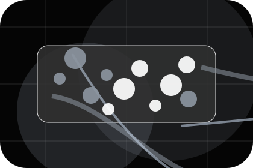
The practical benefit visitors should expect after choosing this route.
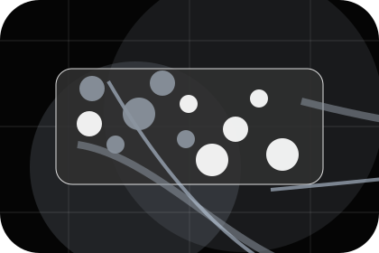
Where to compare details, pricing, support, or contact options before committing.
Network / 04
Community explains the practical scope, best-fit situations, and expected outcome so telecommunications visitors can compare options without decoding jargon.
The section keeps the offer concrete: what is included, who it is best for, what decision it supports, and which linked route gives the deeper detail.
Explore NetworkWho should use community and when it belongs in the network journey.
The practical benefit visitors should expect after choosing this route.
Where to compare details, pricing, support, or contact options before committing.
Network / 05
Infrastructure explains the practical scope, best-fit situations, and expected outcome so telecommunications visitors can compare options without decoding jargon.
The section keeps the offer concrete: what is included, who it is best for, what decision it supports, and which linked route gives the deeper detail.
Explore NetworkWho should use infrastructure and when it belongs in the network journey.
The practical benefit visitors should expect after choosing this route.
Where to compare details, pricing, support, or contact options before committing.
Network / 06
Team explains the practical scope, best-fit situations, and expected outcome so telecommunications visitors can compare options without decoding jargon.
The section keeps the offer concrete: what is included, who it is best for, what decision it supports, and which linked route gives the deeper detail.
Explore NetworkWho should use team and when it belongs in the network journey.
The practical benefit visitors should expect after choosing this route.
Where to compare details, pricing, support, or contact options before committing.
Network / 07
Standards explains the practical scope, best-fit situations, and expected outcome so telecommunications visitors can compare options without decoding jargon.
The section keeps the offer concrete: what is included, who it is best for, what decision it supports, and which linked route gives the deeper detail.
Explore Network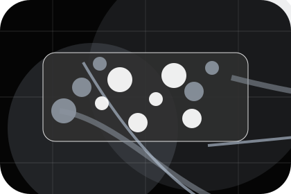
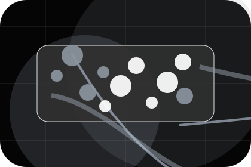
Who should use standards and when it belongs in the network journey.
Network / 08
Expansion explains the practical scope, best-fit situations, and expected outcome so telecommunications visitors can compare options without decoding jargon.
The section keeps the offer concrete: what is included, who it is best for, what decision it supports, and which linked route gives the deeper detail.
Explore NetworkWho should use expansion and when it belongs in the network journey.
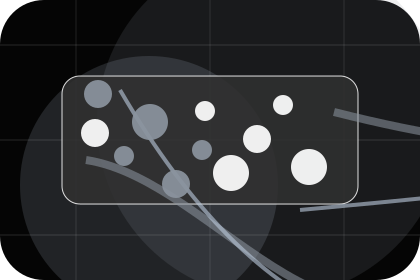
The practical benefit visitors should expect after choosing this route.
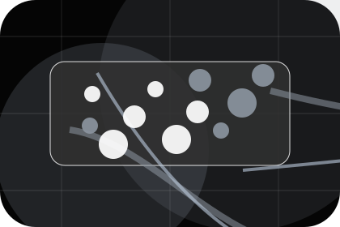
Where to compare details, pricing, support, or contact options before committing.
Network / 09
Trust explains the practical scope, best-fit situations, and expected outcome so telecommunications visitors can compare options without decoding jargon.
The section keeps the offer concrete: what is included, who it is best for, what decision it supports, and which linked route gives the deeper detail.
Explore NetworkWho should use trust and when it belongs in the network journey.
The practical benefit visitors should expect after choosing this route.
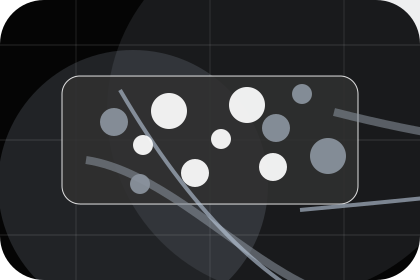
Where to compare details, pricing, support, or contact options before committing.
Network / 10
Signal closes the network route with a clear action, a quick reminder of the value, and a low-friction way to check coverage.
Visitors who are ready can use the primary action. Visitors who are still comparing can scan the section links, proof, and support routes before they check coverage.
Check CoverageThe final block keeps the choice simple: act now, compare one more proof route, or send enough detail for a focused response.
Check Coverageavailability and reliability
A coverage-first telecom site with stark dark hero, satellite-map panels, speed proof, and direct address checking. Network ends with a direct path to check coverage, plus enough context for visitors who still need to compare.
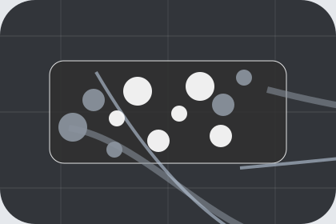
Check CoverageInformation is provided for planning and should be reviewed for the final client, location, and operating rules.